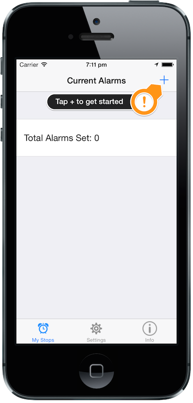
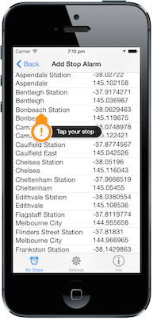
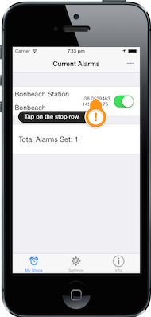
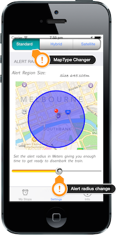

Welcome to MyStopMonitor.
Thanks for downloading my app here is some information to help you get started adding station alerts to the application.
Add your first stop alert/reminder:
| Tap + to add a stop |  |
| Search or select Stop from List. |  |
| Tap Stop to view extra information. |  |
| If your not happy with the alert time before stop arrives, change the radius of alerts in the settings tab. |  |
More instructions can be found at http://MyStopMonitor.mine.nu/